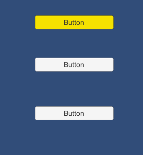
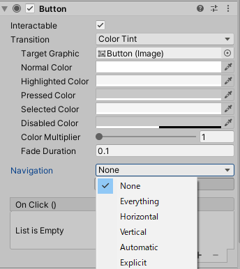
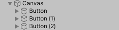

キー操作でUIのナビゲーションをループさせる
概要

キーの上下でカーソル移動させる際、上図のようにボタンが並んでいるときに最上部から最下部にループしたいケースがあります。
UIコンポーネントには下図のようにナビゲーションの設定項目があるのですが、これらを設定しても自動でループの表現はできません。
Navigation項目をExplicitに設定して各遷移先を明示的に指定すれば可能ですが、手間なので自動で設定するようにします。

ナビゲーションを自動設定

レイアウトグループを使うことを考えると、ヒエラルキーの順番とボタンの順番は一致しているので、この順番どおりにナビゲーションを設定します。
以下のようなコードを書いて、ボタンの親のオブジェクトにつけます(上図でいうCanvas)。
ボタンなどはSelectableクラスを継承しているのでこれを取得して、全てにナビゲーションモードをExplicitにして遷移先を設定します。
public class LoopMenu : MonoBehaviour {
void Start() {
//子のボタンやスライダーなど操作可能なコンポーネントを取得する
var selects = GetComponentsInChildren<Selectable>();
for (var i = 0; i < selects.Length; i++) {
var nav = selects[i].navigation;
nav.mode = Navigation.Mode.Explicit;
nav.selectOnUp = selects[i == 0 ? selects.Length - 1 : i - 1];
nav.selectOnDown = selects[(i + 1) % selects.Length];
selects[i].navigation = nav;
}
}
}
他のケース
例えば、interactableでないボタンは除外する場合は、子のselectableを取得したあとに、以下のようにFilterすれば良いと思います。
selects = selects.Where((s) => s.interactable).ToArray();
また、あまりないと思いますが、ヒエラルキーの順番と一致しない場合はpositionでソートするという方法も考えられます。
使用バージョン
Unity 2019.4.5